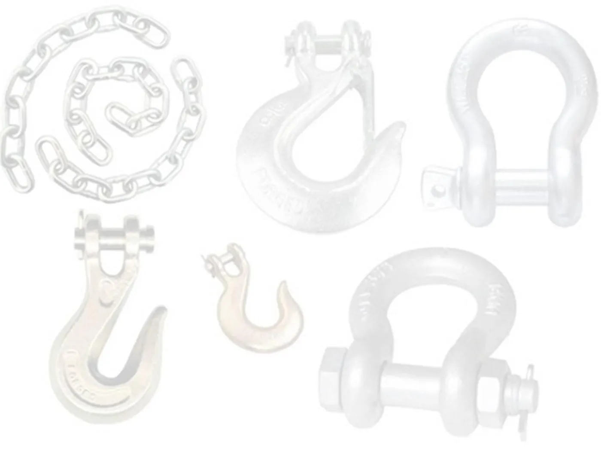
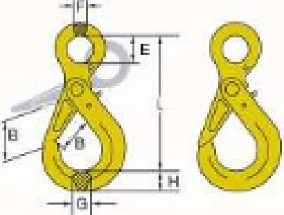

Safety hook · Swivel hook · Sling hook
Móc cẩu an toàn – bảng thông số kỹ thuật
Safety Hook OBK, BK, Swivel Safety Hook BKL và Sling Hook EKN – tải trọng làm việc 1,12 đến 32 tấn, dùng cho xích 6 đến 32 mm.
Hooks
Móc cẩu an toàn cho sling xích và cáp
Các dòng móc cẩu hợp kim rèn, sơn vàng nhận diện, có cơ cấu khóa an toàn – dùng cho sling xích cấp 8/cấp 10, sling cáp thép và pa lăng. Thông số dưới đây được trích từ catalogue Amos Việt Nam; các kích thước L, B, E, F, G, H tính bằng mm theo hình vẽ.
Safety Hook OBK With Grip
Móc an toàn OBK có tay cầm

Safety Hook OBK With Grip – thông số kỹ thuật
| Mã (Code) | WLL (tấn)* | Cỡ xích (mm) | L | B | E | F | G | H | Khối lượng (kg) |
|---|---|---|---|---|---|---|---|---|---|
| OBK-6-8 | 1.12 | 6 | 103 | 26 | 22 | 9 | 14 | 17 | 0.4 |
| OBK-7/8-8 | 2.0 | 7/8 | 135 | 37 | 25 | 10 | 20 | 22 | 0.8 |
| OBK-10-8 | 3.2 | 10 | 168 | 47 | 32 | 13 | 22 | 29 | 1.3 |
| OBK-13-8 | 5.4 | 13 | 201 | 54 | 40 | 15 | 27 | 35 | 2.3 |
| OBK-16-8 | 8.0 | 16 | 249 | 68 | 56 | 19 | 29 | 43 | 4.0 |
| OBK-18/20-8 | 12.5 | 19 | 293 | 73 | 60 | 22 | 37 | 48 | 7.5 |
| OBK-22-8 | 15.5 | 22 | 335 | 87 | 70 | 24 | 40 | 57 | 10.0 |
* WLL: tải trọng làm việc (tấn). Cỡ xích 7/8 = dùng cho xích 7 hoặc 8 mm.
Safety Hook BK
Móc an toàn tự khóa BK


Safety Hook BK – thông số kỹ thuật
| Mã (Code) | WLL (tấn)* | Cỡ xích (mm) | L | B | E | F | G | H | Khối lượng (kg) |
|---|---|---|---|---|---|---|---|---|---|
| BK-6-8 | 1.12 | 6 | 109 | 29 | 22 | 10 | 15 | 21 | 0.5 |
| BK-7/8-8 | 2.0 | 7/8 | 137 | 38 | 25 | 11 | 17 | 23 | 0.8 |
| BK-10-10 | 4.0 | 10 | 168 | 44 | 34 | 13 | 21 | 30 | 1.5 |
| BK-13-10 | 6.7 | 13 | 207 | 54 | 44 | 16 | 30 | 39 | 2.8 |
| BK-16-10 | 10.0 | 16 | 253 | 62 | 56 | 20 | 37 | 49 | 5.6 |
| BK-18/20-10 | 16.0 | 19 | 290 | 68 | 60 | 22 | 42 | 63 | 8.3 |
| BK-22-8 | 15.5 | 22 | 320 | 80 | 70 | 24 | 47 | 62 | 11.2 |
| BK-26-8 | 21.6 | 26 | 345 | 100 | 80 | 25 | 50 | 68 | 14.5 |
| BK-28-8 | 25.0 | 28 | 400 | 120 | 90 | 27 | 62 | 81 | 22.0 |
* WLL: tải trọng làm việc (tấn). Cỡ xích 7/8 = dùng cho xích 7 hoặc 8 mm.
Swivel Safety Hook BKL
Móc an toàn xoay BKL

Swivel Safety Hook BKL – thông số kỹ thuật
| Mã (Code) | WLL (tấn)* | Cỡ xích (mm) | L | B | E | F | G | H | Khối lượng (kg) |
|---|---|---|---|---|---|---|---|---|---|
| BKL-6-8 | 1.12 | 6 | 149 | 28 | 23 | 11 | 15 | 21 | 0.6 |
| BKL-7/8-8 | 2.0 | 7/8 | 183 | 37 | 27 | 12 | 17 | 23 | 1.1 |
| BKL-10-10 | 4.0 | 10 | 218 | 44 | 36 | 15 | 21 | 30 | 2.0 |
| BKL-13-10 | 6.7 | 13 | 280 | 54 | 47 | 19 | 30 | 39 | 3.8 |
| BKL-16-10 | 10.0 | 16 | 343 | 62 | 57 | 22 | 37 | 49 | 7.1 |
| BKL-18/20-10 | 16.0 | 19 | 367 | 69 | 70 | 26 | 42 | 63 | 11.1 |
* WLL: tải trọng làm việc (tấn). Cỡ xích 7/8 = dùng cho xích 7 hoặc 8 mm.
Sling Hook EKN With Latch
Móc cẩu EKN có lẫy an toàn

Sling Hook EKN With Latch – thông số kỹ thuật
| Mã (Code) | WLL (tấn)* | Cỡ xích (mm) | L | B | E | F | G | H | Khối lượng (kg) |
|---|---|---|---|---|---|---|---|---|---|
| EKN-6-8 | 1.12 | 6 | 94 | 24 | 22 | 10 | 17 | 19 | 0.4 |
| EKN-7/8-8 | 2.0 | 7/8 | 105 | 28 | 25 | 11.5 | 17 | 22 | 0.5 |
| EKN-10-10 | 3.2 | 10 | 131 | 37 | 32 | 13.5 | 20 | 29 | 0.9 |
| EKN-13-10 | 5.4 | 13 | 161 | 42 | 40 | 17.5 | 27 | 36 | 1.8 |
| EKN-16-10 | 8.0 | 16 | 197 | 52 | 50 | 22 | 34 | 44 | 3.4 |
| EKN-18/20-10 | 12.5 | 18/20 | 229 | 60 | 60 | 26 | 41 | 51 | 5.2 |
| EKN-22-8 | 15.5 | 22 | 269 | 77 | 64 | 31 | 42 | 67 | 9.4 |
| EKN-26-8 | 21.6 | 26 | 301 | 81 | 66 | 32 | 51 | 75 | 12.6 |
| EKN-32-8 | 32.0 | 32 | 333 | 93 | 76 | 38 | 61 | 80 | 17.9 |
* WLL: tải trọng làm việc (tấn). Cỡ xích 7/8 = dùng cho xích 7 hoặc 8 mm.
Sản phẩm liên quan
Xem thêm danh mục
Câu hỏi thường gặp
Hỏi đáp kỹ thuật
Móc an toàn tự khóa (BK) khác móc có lẫy (EKN) thế nào?
Ký hiệu 8 và 10 ở cuối mã móc nghĩa là gì?
Yêu cầu báo giá
Gửi thông số – nhận phương án cáp thép, sling và phụ kiện nâng hạ phù hợp.
Vui lòng cung cấp tên sản phẩm, đường kính, chiều dài, tải trọng làm việc (WLL), tiêu chuẩn và chứng chỉ yêu cầu, số lượng, địa điểm và thời gian cần hàng.